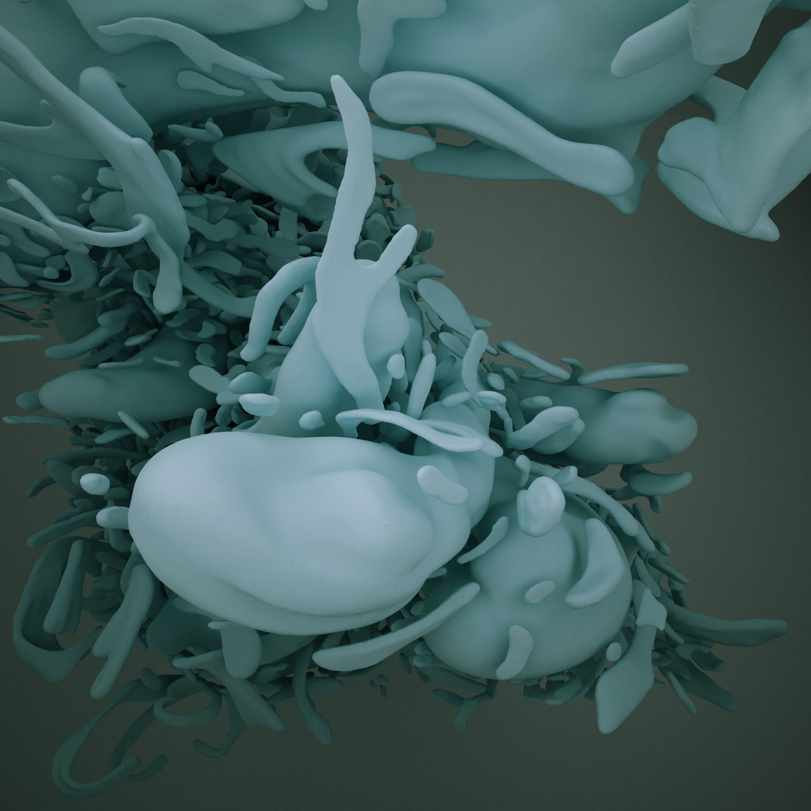
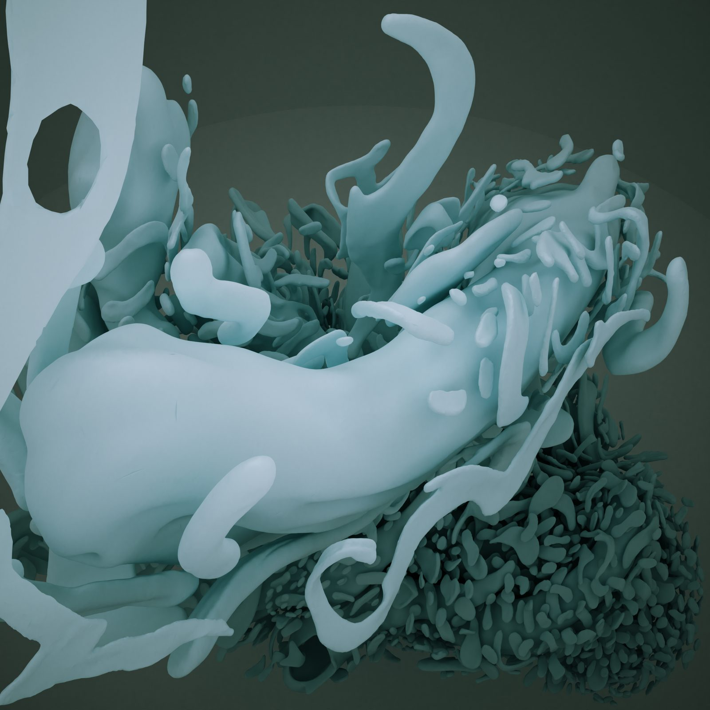

A hand-sculpted VR sculpture that exists to catch light. Built over one year using VR controllers, Flame is a form designed not to be seen, but to be illuminated.
Une sculpture VR sculptée à la main dont la seule raison d’être est de capter la lumière. Réalisée sur une année à l’aide des manettes VR, Flame est une forme conçue non pas pour être vue, mais pour être illuminée.
Flame is the second room published from the Light Gallery, an ongoing underground VR museum whose architecture is designed around the behaviour of diffuse light. The central sculpture was handmade in virtual reality over a one-year period, each gestural stroke of the VR controller adding another layer to an organic, accreting form that sits beneath a vast circular oculus.
Flame est la deuxième salle dévoilée de la Light Gallery, un musée VR souterrain en cours dont l’architecture est pensée autour du comportement de la lumière diffuse. La sculpture centrale a été façonnée à la main en réalité virtuelle sur une période d’un an, chaque geste de la manette VR ajoutant une nouvelle strate à une forme organique qui s’accumule sous un vaste oculus circulaire.
The form is a canvas for light. As simulated sunlight moves across the sky above, photons pour through the oculus and interact with the sculpture’s complex topology, nesting in deep recesses, glancing off smooth bulbous surfaces, casting shadows that shift and dissolve. The sculpture is not the subject; the light is.
La forme est un canevas pour la lumière. À mesure que la lumière solaire simulée traverse le ciel au-dessus, les photons se déversent par l’oculus et rencontrent la topologie complexe de la sculpture : ils se nichent dans de profonds renfoncements, effleurent des surfaces lisses et bulbeuses, projettent des ombres qui se déplacent et se dissolvent. La sculpture n’est pas le sujet ; c’est la lumière qui l’est.

The amalgamation of movements imbues the forms with emotion. Unlike parametric or algorithmic sculpture, every surface carries the trace of a physical gesture: the sweep of an arm, the turn of a wrist. The result is a form that is simultaneously digital and deeply corporeal.
L’amalgame des mouvements imprègne les formes d’émotion. Contrairement à la sculpture paramétrique ou algorithmique, chaque surface porte la trace d’un geste physique : le balayage d’un bras, la torsion d’un poignet. Le résultat est une forme à la fois numérique et profondément charnelle.
The sculpture’s complexity creates what the artist calls a “spatial puzzle for diffuse light.” Its topology is not arbitrary but calibrated: smooth planes to catch broad washes of illumination, dense thickets of organic tendrils to fracture light into scattered points, deep folds to hold shadow. Each surface condition produces a different quality of light.
La complexité de la sculpture crée ce que l’artiste appelle un « casse-tête spatial pour la lumière diffuse ». Sa topologie n’a rien d’arbitraire : elle est calibrée. Des plans lisses pour capter de larges nappes de lumière, des enchevêtrements denses de vrilles organiques pour fracturer la lumière en points épars, de profonds replis pour retenir l’ombre. Chaque condition de surface produit une qualité de lumière différente.

I want to create an atmosphere that can be consciously plumbed with seeing, like the wordless thought that comes from looking in a fire.
Je veux créer une atmosphère que l’on puisse sonder consciemment par le regard, comme la pensée sans mots qui naît lorsqu’on contemple un feu.


The Light Gallery is an ongoing project: a virtual underground museum whose architecture pushes the limits of indirect solar lighting through the freedom of the digital realm. Freed from the constraints of gravity, material, and cost, each room explores the interaction of light, space, and sculptural form in conditions that would be impossible to achieve in physical architecture.
La Light Gallery est un projet en cours : un musée souterrain virtuel dont l’architecture repousse les limites de l’éclairage solaire indirect grâce à la liberté du domaine numérique. Affranchie des contraintes de gravité, de matériau et de coût, chaque salle explore l’interaction de la lumière, de l’espace et de la forme sculpturale dans des conditions impossibles à atteindre en architecture physique.
The room that houses Flame is part of a larger unseen architectural complex, approximately fifteen rooms designed to be released one at a time over a period of years. Each room is visually isolated from the others, which allows extraordinarily complex art pieces to coexist without affecting one another. The architecture of virtual reality begins to be shaped by its own technological constraints, just as gravity shapes physical architecture.
La salle qui abrite Flame fait partie d’un ensemble architectural plus vaste et invisible, environ quinze salles conçues pour être dévoilées une à une sur plusieurs années. Chaque salle est visuellement isolée des autres, ce qui permet à des œuvres d’une extrême complexité de coexister sans interférer les unes avec les autres. L’architecture de la réalité virtuelle commence à être façonnée par ses propres contraintes technologiques, tout comme la gravité façonne l’architecture physique.


The sound was designed by artist Franco Bellavita from field recordings and instruments to create a unique mood for the space. The sound reflects the sun’s rising and setting, the life and death cycle. Wind, but also other elements that evoke abstract creatures, spaces from distant realities, a place forever unattainable.
Le son a été conçu par l’artiste Franco Bellavita à partir d’enregistrements de terrain et d’instruments afin de créer une ambiance unique pour l’espace. Le son épouse le lever et le coucher du soleil, le cycle de la vie et de la mort. Le vent, mais aussi d’autres éléments qui évoquent des créatures abstraites, des espaces venus de réalités lointaines, un lieu à jamais inaccessible.
Flame was first presented to the public in March 2021 at Galerie Art Mûr, as part of the VR exhibition series Samuel curated there. It was subsequently released as a free VR experience, allowing anyone with a powerful PC and VR headset to explore the sculpture and its light at full architectural scale.
Flame a été présentée au public pour la première fois en mars 2021 à la Galerie Art Mûr, dans le cadre de la série d’expositions VR dont Samuel assurait le commissariat. Elle a par la suite été diffusée comme expérience VR gratuite, permettant à quiconque possède un PC puissant et un casque VR d’explorer la sculpture et sa lumière à pleine échelle architecturale.